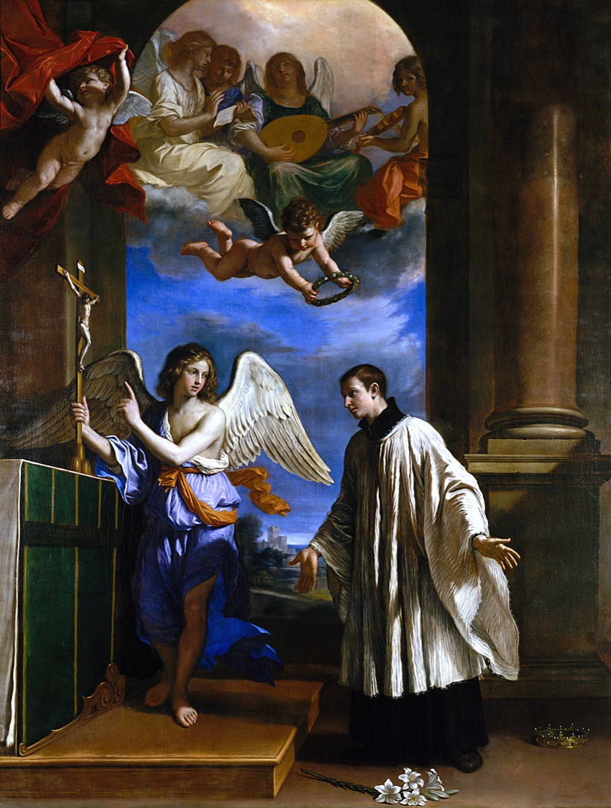
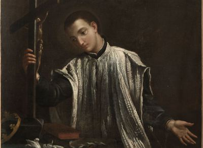

Isusovačka mladež (Zaštitnici studenata i novaka)
Student teologije
Sv. Alojzije Gonzaga
1568. – 1591.
Odrekao se plemićkoga nasljedstva kako bi prihvatio redovnički poziv. Kao mladi isusovački skolastik služio je oboljelima tijekom epidemije u Rimu, a umro je prije nego što je dočekao svećeničko ređenje.

Izvor slike


Izvor slike
- Spomendan
- 21. lipnja
- Zaštitništvo
- učenici · kršćanska mladež · isusovački novaci · oboljeli od AIDS-a · njegovatelji
- Životni vijek
- 1568. – 1591.
- Djelovanje
- Mladi i odgoj · Euharistija i pobožnosti · Bolesnici i umirući
- Razdoblje
- 16. stoljeće
- Datum rođenja
- 09.03.1568.
- Mjesto rođenja
- Castiglione delle Stiviere, Lombardija, Italija
- Datum smrti
- 21.06.1591.
- Mjesto smrti/mučeništva
- Rim, Italija
- Okolnosti smrti/mučeništva
- Umro nakon zaraze i bolesti dobivene tijekom njege bolesnika za epidemije.
- Uloga
- Student teologije
- Mučenik
- Ne
- Ostale oznake
- Isusovački skolastik; njegovatelj bolesnika; zaštitnik mladeži
- Pripadnost
- Isusovac
- Drugi oblici imena
- Aloysius Gonzaga · Aloysius · Luigi Gonzaga
Životopis
Sveti Alojzije Gonzaga umro je kao mladi isusovački skolastik nakon služenja bolesnicima tijekom epidemije u Rimu. Nije dočekao svećeničko ređenje. Prije dolaska u Družbu Isusovu upoznao je kneževske dvorove, dobio obrazovanje namijenjeno budućem velikašu i nosio odgovornost prvorođenoga sina. Od toga se nasljedstva odrekao kako bi prihvatio redovnički poziv. U posljednjoj godini života služio je ljudima kojima je trebalo oprati tijelo, donijeti hranu i pomoći da prime sakramente.
Rodio se 9. ožujka 1568. u Castiglione delle Stiviere, u sjevernoj Italiji. Bio je najstariji od osmero djece markiza Ferrantea Gonzage i Marte Tane di Santena. Talijansko mu je ime bilo Luigi. Obitelj je pripadala plemstvu i od najstarijega se sina očekivalo da preuzme naslov, posjede i javne obveze. Majka ga je odgajala u molitvi i brizi za siromašne, dok ga je otac od rane dobi uvodio u vojnički život.
Životopisci pamte njegovo dječačko sudjelovanje u vojnom taboru, uz odoru i vježbe kojima ga je otac pripravljao za budućnost. To nije bilo sve njegovo djetinjstvo, ali pokazuje koliko je rano obiteljsko očekivanje dobilo konkretan oblik. Trebao je upoznati oružje, zapovijedanje i društvo vojnika. Kasniji izbor redovništva zato je značio promjenu već započetoga odgojnog puta, a ne samo odbijanje neodređene mogućnosti koja mu se nudila u odrasloj dobi.
Godine 1576. s mlađim je bratom Rodolfom otišao u Firencu, na dvor Medicija. Učio je jezike i stjecao znanja i vještine prikladne plemićkom položaju. Među njima su bili latinski i francuski, dvorsko ponašanje, ples i druge tadašnje odgojne vježbe. Poslije je boravio i u Mantovi. Uz to je čitao životopise svetaca i mnogo molio. Njegov se poziv oblikovao unutar obrazovanja i sredine koje je dobro upoznao, ne izvan svakog dodira s njima.
U Castiglioneu je 1580. primio prvu svetu pričest od kardinala Karla Boromejskoga. Taj je susret ostao važan u njegovu životopisu, zajedno s rastućom euharistijskom pobožnošću. Čitao je i izvještaje isusovačkih misionara iz Indije te se zanimao za njihovo poslanje. Već je u vlastitome kraju poučavao dječake vjeronauku. Želju za služenjem nije morao odgađati do mogućeg odlaska u daleku zemlju: mogao ju je započeti među djecom koju je susretao.
Obiteljske su ga veze dovele i u Španjolsku. Od 1582. on i Rodolfo bili su paževi infanta Diega na madridskom dvoru. Nastavio je obrazovanje i molitvu, a uz isusovačkoga ispovjednika razlučivao je odlazak u Družbu Isusovu. Majka je podupirala njegovu želju; otac joj se protivio. Nakon povratka u Italiju 1584. obiteljska se rasprava nastavila. Redovnički bi život značio da najstariji sin neće preuzeti mjesto za koje je odgajan.
Rodbina ga je pokušavala usmjeriti i prema crkvenoj službi koja bi bila spojiva s plemićkim ugledom. Alojzije je ipak ustrajao pri odluci da postane isusovac. U studenome 1585. odrekao se nasljednih prava u korist Rodolfa. Odricanje je uređeno i pravno, uz carsku potvrdu. Njegov je poziv tako uključio stvaran prijenos imovine i položaja. Nije se radilo samo o jednostavnijoj odjeći ili privatnoj sklonosti molitvi, nego o drukčijem usmjerenju cijeloga života.
U isusovački novicijat u Rimu primljen je 25. studenoga 1585., sa sedamnaest godina. Došao je s već razvijenim navikama molitve i pokore. Redovnička je formacija od njega tražila i nešto novo: da vlastite navike podloži vodstvu poglavara i životu s drugima. Prema životopisima, poticali su ga da ublaži stroga odricanja i više sudjeluje u zajedništvu novaka. Poslušnost je obuhvaćala i prihvaćanje razborite mjere, a ne samo spremnost na dodatne napore.
Nakon novicijata nastavio je studij. Boravio je i u Milanu, a zatim se vratio u Rim, gdje se školovao u Rimskom kolegiju. Godine 1587. položio je redovničke zavjete siromaštva, čistoće i poslušnosti te nastavio pripravu za svećeništvo. Bio je još učenik i redovnik u formaciji. Bolesnima je poslije pomagao u pripravi za sakramente kao njihov pratitelj i njegovatelj.
Njegov je duhovnik i učitelj bio Robert Bellarmin, poslije kardinal i svetac. Uz studij Alojzije je njegovao molitvu pred Presvetim oltarskim sakramentom, marijansku pobožnost i razmatranje Kristove muke. Takva je priprava uključivala i provjeru vlastitih odluka s iskusnijim čovjekom. U zajednici nije sam određivao oblik svojega duhovnog života. Učio je povezivati molitvu, učenje i svakodnevne obveze, dok je priprema za buduću službu još trajala.
Ni odricanje od nasljedstva nije prekinulo sve veze s obitelji. Godine 1589. pozvan je u Mantovu da posreduje u sporu između Rodolfa i mantovskoga vojvode. Ponovno se susreo s obiteljskim i imovinskim pitanjima, ovaj put kao redovnik kojemu je povjerena zadaća mirenja. Nakon toga vratio se u Rim 1590. Njegov život nije bio samo niz osobnih odricanja: uključivao je i odgovornost za odnose među ljudima s kojima je odrastao.
Godine 1591. Rim je zahvatila teška epidemija. Isusovci su se uključili u bolničku pomoć, a Alojzije se javio da služi oboljelima. Prikupljao je milostinju za njihove potrebe, pomagao ljudima na ulicama i prenosio ih u bolnicu. U gradu punom bolesnih takva je pomoć zahtijevala i neposredan tjelesni rad. Mladić školovan za upravljanje posjedima sada je vlastitim rukama pomagao onima koji se nisu mogli sami skrbiti za sebe.
Prao je bolesnike, hranio ih i pomagao im pripraviti se za sakramente. Njega tijela i vjerska pratnja nisu bile odvojene službe. Bolesniku je trebala čista postelja i hrana, ali i mogućnost molitve i susreta sa svećenikom. Alojzije je u tome sudjelovao onime što je kao mladi redovnik mogao dati. Njegova je služba pripadala zajedničkom crkvenom odgovoru na nevolju, s poglavarima i subraćom koji su također nosili odgovornost za bolesnike i njegovatelje.
Kada su počeli obolijevati i mladi isusovci, poglavari su ograničili njegov rad među zaraženima. Poslije mu je dopušteno pomagati u drugoj bolnici, Naše Gospe od Utjehe. Ipak se razbolio te je početkom ožujka ostao u postelji. Bolest je potrajala više mjeseci. Nastavio je primati duhovnu pratnju i razgovarati s Bellarminom. U pismu majci, sačuvanom u njegovoj duhovnoj baštini, izrazio je ljubav prema obitelji i kršćansku nadu pred smrću.
Umro je u Rimu 21. lipnja 1591., u dobi od dvadeset i tri godine. Njegova priprava za svećeništvo ostala je nedovršena, ali djela milosrđa nisu čekala završetak studija. Glas o njegovoj svetosti ubrzo se proširio. Papa Benedikt XIII. proglasio ga je svetim 1726. zajedno sa Stanislavom Kostkom, također mladim isusovcem. Njegovi se posmrtni ostatci časte u rimskoj crkvi svetoga Ignacija, a uspomena na njega posebno se čuva i u rodnom Castiglioneu.
Crkva ga štuje kao zaštitnika mladeži i učenika. Brojna učilišta nose njegovo ime, a u umjetnosti se prikazuje s ljiljanom, raspelom, krunicom ili odloženom krunom. Ti prikazi povezuju čistoću, molitvu i odricanje od nasljedstva. Uz njih stoji i prizor koji je obilježio posljednje mjesece njegova života: mladi redovnik nosi i njeguje bolesnika. Spomendan svetoga Alojzija Gonzage slavi se 21. lipnja.
Pročitaj više na izvornoj stranici ↗
Molitve i dodatni sadržaji
Misli
Bolje je biti dijete Božje nego kralj cijeloga svijeta.Misli svetaca